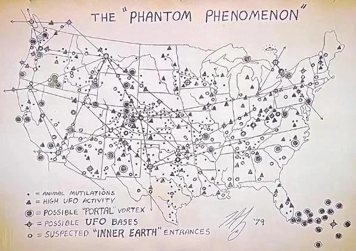

En los márgenes de la ufología estadounidense circula, desde hace más de cuatro décadas, un mapa dibujado a mano que promete algo mayor que un simple catálogo de avistamientos: una red geográfica unificada que conectaría mutilaciones de ganado, bases subterráneas, portales dimensionales y entradas a un supuesto mundo interior. Se le conoce como “The Phantom Phenomenon”, firmado con una rúbrica y el año ’79.
No hay archivo militar, ni publicación académica, ni cadena de custodia que lo respalde. Su historia vive por completo en foros, blogs de ufología y publicaciones esotéricas de los años ochenta —el terreno exacto donde nacen y mutan este tipo de documentos. Y sin embargo, sus símbolos no son arbitrarios: cada nodo marcado coincide, con sospechosa frecuencia, con un lugar que ya era célebre en el imaginario paranormal antes de que el mapa existiera.
Este artículo reconstruye lo que se sabe —y lo que no— sobre el origen del mapa, desentraña su simbolismo y ofrece, al final, un cruce interactivo entre sus nodos más densos y los sitios reales que probablemente los inspiraron.
Origen y autoría en disputa
No existe una sola referencia al mapa “Phantom Phenomenon” en medios académicos, gubernamentales o periodísticos convencionales. Su circulación ha sido, desde el principio, informal: usuarios de foros de ufología recuerdan haberlo visto reproducido en publicaciones sensacionalistas de los años ochenta, entre ellas una revista conspirativa que lo vinculaba a teorías sobre secuestros y manipulación tecnológica de humanos.
Sobre quién lo dibujó, las versiones chocan. Una atribución popular —pero sin sustento— lo asigna al supuesto “insider” de bases subterráneas Phil Schneider. Una fuente más especializada, en cambio, lo atribuye al investigador independiente Jason Bishop III, conocido también por el alias Tal Levesque, fechándolo en 1979.
Simbolismo: líneas ley, vórtices y bases
El mapa clasifica sus marcas en cinco categorías, todas rotuladas en inglés en la leyenda original. Bajo esa clasificación aparente hay una tesis más ambiciosa: que ningún fenómeno paranormal está aislado, sino que forma parte de una red geomagnética invisible que conecta ovnis, portales y bases subterráneas —una versión "ufológica" del concepto de líneas ley.
| Símbolo | Categoría | Interpretación conspirativa |
|---|---|---|
| • | Animal Mutilations | Mutilaciones de ganado — fenómeno investigado seriamente en EE.UU. durante los años 70, con olas de casos reales en Colorado, Nuevo México y otros estados. |
| ▲ | High UFO Activity | Zonas de alta actividad OVNI reportada; en la lógica del mapa, corredores de tránsito entre nodos de la red. |
| ◎ | Possible "Portal" Vortex | Cruces intensos de "líneas ley" que formarían portales interdimensionales naturales, usados —según esta teoría— por inteligencias no convencionales. |
| ⊕ | Possible UFO Bases | Instalaciones subterráneas, militares o extraterrestres, ocultas aprovechando la distorsión magnética de los nodos. |
| ○ | Suspected "Inner Earth" Entrances | Accesos a un supuesto mundo interior — variante directa del mito de la Tierra Hueca. |
👤Autor del hilo original en Reddit"Me cuesta creer que una sola persona pudiera manejar tanta información" — expresando su propia sospecha de que el mapa fuera, en el fondo, un engaño elaborado.
El documento completo
Esta es la versión del mapa que circula con mayor nitidez, incluyendo el grid de coordenadas que permite ubicar sus símbolos sobre el territorio real de Estados Unidos —la base que usamos más adelante para el cruce interactivo con sitios emblemáticos.
{kind=link}

Mapa interactivo: los nodos y sus lugares reales
Cruzando el grid de coordenadas del documento con los racimos de símbolos más densos, casi todos los "nodos fuertes" del mapa caen sobre lugares que ya eran célebres en la ufología antes o durante los años setenta: Monte Shasta, Área 51, Dulce, el Valle de San Luis, el Triángulo de las Bermudas. Explora el mapa para ver cada sitio y su conexión con el folclore paranormal estadounidense.
Lo interesante no es que el mapa "acierte" —no hay forma de verificar eso—, sino que su autor, quienquiera que fuese, organizó el imaginario conspirativo ya circulante en 1979 como si fuera una red geomagnética unificada. Shasta aporta la Tierra Hueca; Dulce y Área 51, las bases; el Valle de San Luis, las mutilaciones reales documentadas por investigaciones oficiales de la época; las Bermudas, los portales y desapariciones. El mapa es, en ese sentido, menos un documento de hechos y más un atlas resumen del folclore ovni estadounidense de la década.
Autenticidad: ¿documento o compendio de folclore?
No se ha encontrado evidencia empírica de que el mapa sea genuino más allá de la ufología informal. Solo aparece en medios alternativos —nunca en archivos oficiales, académicos o periodísticos verificables—, y hasta dentro de la propia comunidad OVNI persiste el escepticismo sobre su origen.
En cuanto a composición, el documento parece confeccionado a mano o con herramientas de computación primitiva: un gráfico sencillo, sin metadatos ni firma verificable más allá de la rúbrica y el año. La comparación con textos conspirativos contemporáneos —como The Matrix I (1982), que usa el mismo término "Phantom Phenomenon" para hablar de redes energéticas y niveles de densidad— muestra coincidencias estilísticas y conceptuales, pero no confirma autenticidad histórica del mapa como documento aislado.
Conclusión
No hay base verificable de que "The Phantom Phenomenon" sea un documento militar o institucional real de 1979. Todo indica que se trata de un esquema conspirativo elaborado por un investigador privado —posiblemente Tal Levesque— que mezcla leyendas OVIN, mutilaciones de ganado reales y teorías de líneas ley en un solo mosaico visual.
Si es falso en sentido literal —y todo apunta a que lo es—, su valor no está en la precisión de sus coordenadas, sino en lo que revela sobre cómo se conectaban, hacia finales del siglo XX, ciertas ideas paranoides: portales, bases secretas, Tierra Hueca, el Triángulo de las Bermudas. Como compendio visual del folclore OVNI de la época, el mapa ofrece pistas simbólicas genuinamente interesantes para el estudio de la cultura conspirativa — aunque ninguna de ellas deba tomarse como evidencia de una red geomagnética real.
// Para llevarse de este artículo
- No existe ninguna fuente oficial, académica o periodística que confirme la autenticidad del mapa "The Phantom Phenomenon" como documento militar de 1979.
- Su autoría se disputa entre Phil Schneider y Tal Levesque, sin prueba independiente que confirme a ninguno de los dos.
- Casi todos sus nodos de mayor densidad coinciden con lugares que ya eran célebres en la ufología antes de 1979: Shasta, Dulce, Área 51, el Valle de San Luis, las Bermudas.
- El único elemento verificable del mapa son las mutilaciones de ganado, un fenómeno que sí fue objeto de investigaciones oficiales reales en EE.UU. durante los años 70.
Fuentes
-
Foros y archivos de ufología (Reddit y blogs especializados)Discusiones sobre el origen y la autoría del mapa "Phantom Phenomenon"Fuente principal de la circulación informal del mapa; incluye el testimonio del usuario original que expresó dudas sobre su autenticidad.
-
Blog especializado en ufologíaReferencia a "Tal's 1979 'Phantom Phenomenon' map"Atribuye el mapa al investigador Jason Bishop III (alias Tal Levesque), la fuente más específica disponible sobre su autoría.
-
The Matrix IDescripción de la "red de energía" terrestre y el término "Phantom Phenomenon"Muestra que el concepto de red geomagnética con portales dimensionales ya circulaba en el ambiente conspirativo de la época.
-
Wikipedia / FBIMutilaciones de ganado en Estados Unidos durante los años 70Documenta las olas reales de casos investigados oficialmente en Colorado, Nuevo México y otros estados, incluyendo el caso "Snippy" de 1967.
-
WikipediaHollow Earth (Tierra Hueca)Contextualiza el mito de la Tierra Hueca y su lugar recurrente en la cultura conspirativa estadounidense.